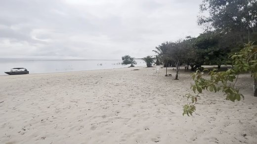

00:01:34.800
Uma praia larga de areia clara se abre para o rio, com uma lancha perto da margem e árvores à direita.
Maripá, Santarém (PA) · confirmado
O vídeo começa em Maripá, na margem esquerda do Tapajós, antes da saída para Vila Franca.
Transcrição · 00:01:27 | 00:01:34 | 00:01:42 | 00:01:49
Turismo Aqui — quadro de vídeo publicado no YouTube